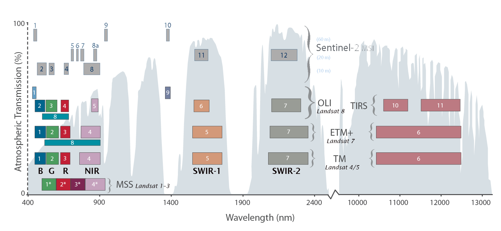
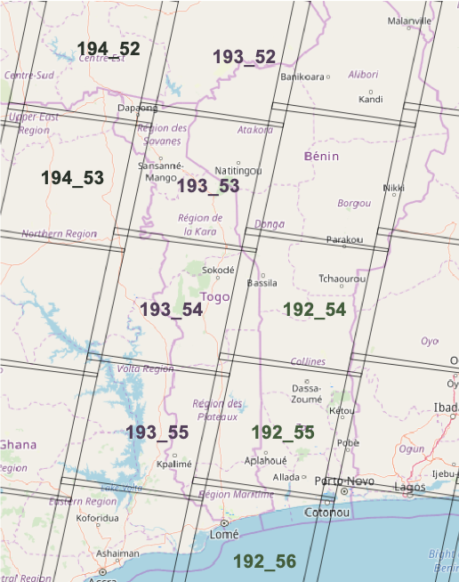
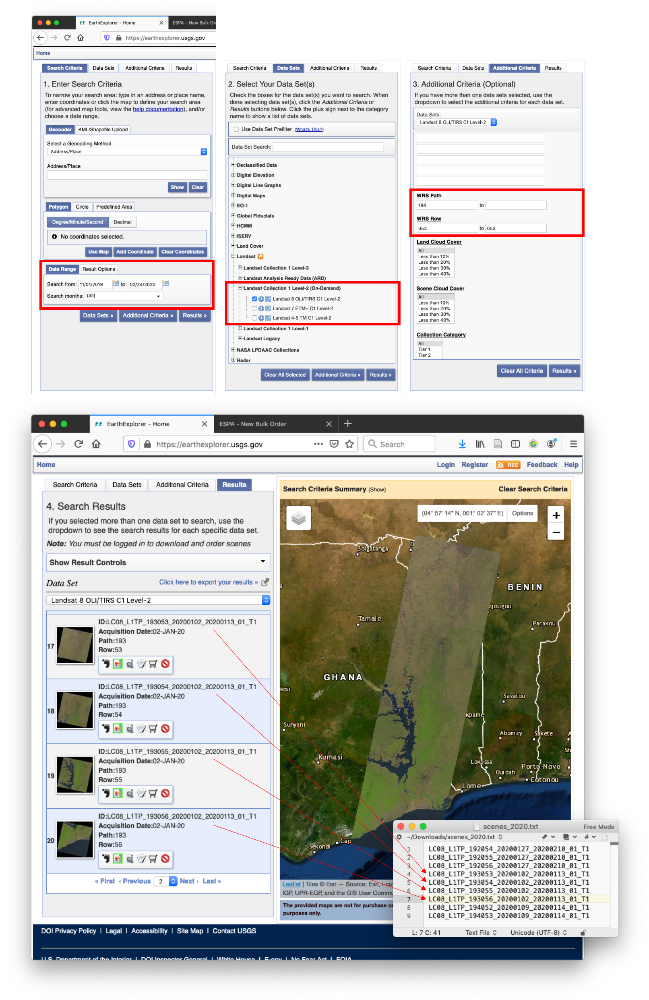
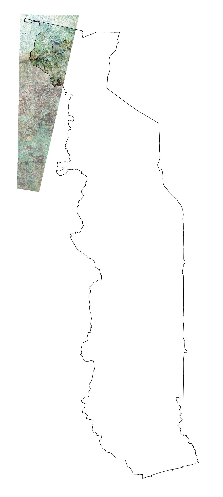
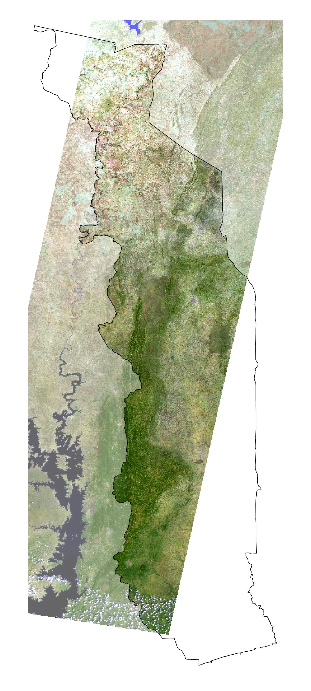
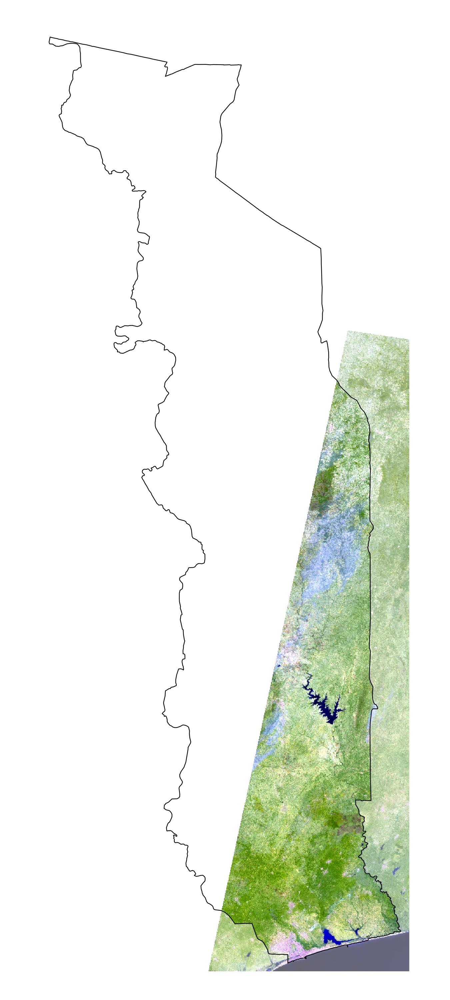

2.1 Données de base
2.1.1 Images Landsat
Actuellement, l’analyse de l’évolution du couvert forestier est principalement basée sur les images satellitaires Landsat, qui sont disponibles gratuitement dans les archives de l’USGS. Les missions Landsat-4 à Landsat-8 produisent des images de résolution spatiale et radiométrique comparable depuis les années 1980. Les images brutes sont corrigées géométriquement et radiométriquement par l’USGS (USGS Collection 1 Level-2 Surface Reflection Product).
La résolution spatiale des images est de 30 mètres. Les bandes spectrales utilisées sont B, G, R, NIR, SWIR-1 et SWIR-2 (voir les désignations des bandes dans la figure ci-dessous).

Le territoire du Togo est couvert par un total de 9 images Landsat (scènes WRS 2). Les zones couvertes par les différentes scènes sont indiquées dans la figure ci-dessous.

Les images Landsat utilisées pour l’évaluation du couvert forestier ont été prises idéalement à la fin de la saison sèche, c’est-à-dire de (Nov), Déc, Jan, (Fév) et sont disponibles en bonne qualité (sans nuages ou seulement légèrement couvertes par des nuages et des ombres) pour la même date sur l’ensemble du chemin WRS 2 respectif. Pour les années de référence, là ou on aimerait des cartes qui couvrent l’ensemble du territoire du Togo, des images correspondantes sont nécessaires pour tous les trois chemins WRS 2.
Le tableau ci-dessous présente les images satellites utilisées pour l’analyse du couvert forestier au Togo. Les années de référence utilisées pour le NRF et les images correspondantes sont indiquées en caractères gras. Ce n’est que pour l’année 1991 que les images de différentes dates d’enregistrement ont été combinées pour le chemin WRS 193. L7* marque les images Landsat-7 avec des lacunes dans les données (SLC-off). La colonne GoogleEarth montre la répartition des dates des images de très haute résolution disponibles sur GoogleEarth. Seules les images de référence GoogleEarth de 2017 – 2018 ont été utilisées pour la calibration de la carte forêt/non-forêt 2018.
| WRS 192 054,055,056 |
WRS 193 052,053,054,055 |
WRS 194 052,053 |
GoogleEarth Référence |
|
|---|---|---|---|---|
| 2019 | L8 / 23.12.18 | L8 / 16.02.19 | L8 / 22.01.19 | ++ |
| 2018 | L8 / 05.01.18 | L8 / 12.01.18 | L8 / 18.12.17 | +++++++ |
| 2017 | L8 / 19.02.17 | L8 / 25.01.17 | L8 / 31.12.16 | +++ |
| 2016 | — | — | — | (+) |
| 2015 | L8 / 13.01.15 | L8 / 04.01.15 | L8 / 27.01.15 | (+) |
| 2014 | — | — | — | (++) |
| 2013 | L7* / 31.01.13 | L7* / 23.02.13 | — | (+) |
| 2012 | — | — | L7* / 11.01.12 | (++) |
| 2011 | L7* / 10.01.11 | — | — | (+) |
| 2010 | — | — | L7* / 21.01.10 | (+) |
| 2009 | — | L7* / 27.01.09 | — | |
| 2008 | — | — | — | |
| 2007 | L7* / 30.12.06 | L7* / 22.01.07 | L5 / 05.01.07 | |
| 2006 | — | — | — | |
| 2005 | L7* / 24.12.04 | L7* / 17.02.05 | L7* / 22.12.04 | |
| 2004 | — | — | — | |
| 2003 | L7 / 04.01.03 | L7 / 26.12.02 | L7 / 17.12.02 | (.) |
| 2002 | — | — | — | |
| 2001 | L7 / 13.12.00 | — | — | (.) |
| 2000 | — | L7 / 04.02.00 | L7 / 26.01.00 | |
| … | … | … | … | |
| 1997 | — | — | L5 / 10.02.97 | |
| … | … | … | … | |
| 1991 | L4 / 03.01.91 | L4 / 10.01.91 & L5 / 28.11.89 | — | |
| … | … | … | … | |
| 1987 | L5 / 31.12.86 | L5 / 23.01.87 | L5 / 29.12.86 | |
| 1986 | L5 / 13.01.86 | L5 / 06.03.85 | L5 / 11.01.86 |
2.1.1.1 Acquisition des images
Ouvrir le site USGS Earthexplorer. Dans la fenêtre Search Criteria il faut selectionner la période pour laquelle on cherche des images (Nov - Jan). Dans la fenêtre Data Sets, les produits Landsat Level-2 (Surface Reflectance) sont séléctionnés. Dans la fenêtre Additional Criteria il faut choisir les scènes (chemin 192: 054-056 / chemin 193: 052-055 / chemin 194: 052-053).

Parmi les images disponibles, on sélectionne celles qui sont disponibles à la même date et en bonne qualité pour l’ensemble du chemin WRS. On copie les identifier des images à télécharger dans un fichier txt.
Ensuite on ouvre le site USGS ESPA pour commander les images choisi. On charge le fichier txt avec les identifier des images et on commande les bandes Surface Reflectance et les indices spéctrales (voir image au-dessous). Pour commander des images, il faut qu’on a un compte USGS.

Une fois on est notifié par eMail que les images sont prêts, on les téléchargent manuellement ou tous ensemble avec le USGS bulkdownloader et la commande download_espa_order.py -u [nom d'utilisateur] -o ALL -d [répértoire]. On dézip les images et les rangent dans le répétoire data/Landsat sous la scène et l’année correspondante. Pour des images de l’hiver 2019/20, l’année correspondante est 2020.
2.1.1.2 Prétraitement des images
Le premier traitement est la préparation des images Landsat et autres variables utilisés pour modéliser la surface forestier ou la biomasse aérienne comme les données topographique et climatiques. L’objectif est qu’on prépare avec les données brutes un jeu de données raster complet sur le même extent (territoir du Togo) et avec la même résolution spatiale de 30 mètres (résolution de base des images Landsat).
On ouvre le script 1_prepare-images.R et on modifie la liste des images Landsat à utiliser (in.image.list), par exemple par ajouter les nouveaux image à considérer dans les analyses:
p192.2019 = list(
paste0(DATA.DIR, "/Landsat/192_054/2019/LC081920542018122301T1-SC20190405164258/"),
paste0(DATA.DIR, "/Landsat/192_055/2019/LC081920552018122301T1-SC20190405163359/"),
paste0(DATA.DIR, "/Landsat/192_056/2019/LC081920562018122301T1-SC20190405163342/"))
...
p193.2019 = list(
paste0(DATA.DIR, "/Landsat/193_052/2019/LC081930522019021601T1-SC20190405183839/"),
paste0(DATA.DIR, "/Landsat/193_053/2019/LC081930532019021601T1-SC20190405181518/"),
paste0(DATA.DIR, "/Landsat/193_054/2019/LC081930542019021601T1-SC20190405183609/"),
paste0(DATA.DIR, "/Landsat/193_055/2019/LC081930552019021601T1-SC20190405181507/"))
...
p194.2019 = list(
paste0(DATA.DIR, "/Landsat/194_052/2019/LC081940522019012201T1-SC20190405172019/"),
paste0(DATA.DIR, "/Landsat/194_053/2019/LC081940532019012201T1-SC20190405172055/"))Outre la définition des images à traiter, le script définit une fonction prepare.image pour stacker les différentes bandes des images Landsat, pour les fusioner, masquer et couper les images Landsat chemin par chemin (WRS2 paths 192, 193 et 194 pour Togo). Par défaut, les images qui ont déjà été traité (filename existe déjà) ne sont plus traité (overwrite=FALSE).
Dans la deuxième partie du script, là où c’est noté # DO THE WORK ---------, on lance le traitement des images. Avec le code foreach(...) %dopar% { ... } on lance le traitement de chaque chemin pour chaque année sur des différents processeurs au parallèle. À la fin du script on
- transforme les images du chemin 194 du système de coordonnées UTM 30 vers UTM 31
- produit des thumbnails des images Landsat
Les images prétraités sont sauveguarder dans le répétoire input/1_images du projet, ensemble avec des Thumbnails des chemins. Dans une prochaîne étape, les images sont néttoyées de l’eau, nuages et ombres en utilisant les bandes Landsat de qualité des pixels.
Example
 Images Landsat de l’année 2019: chemin p194 composé de 2 scénes du 22.01.2019 / p193 avec 4 scènes du 16.02.2019 / p192 avec 3 scènes du 23.12.2018
Script R: 01_SSTS/01_data/_src/prep-Landsat.R
###############################################################################
# prep-Landsat.R: lire, nettoyer et empiler des images Landsat
# -----------------------------------------------------------------------------
# Bern University of Applied Sciences
# Oliver Gardi, <oliver.gardi@bfh.ch>
# 13 Mai 2020
# Définitions des variables ===================================================
IN.DIR <- paste0(DIR.RAW.DAT, "/Landsat")
OUT.DIR <- paste0(DIR.SST.DAT, "/Landsat")
if(!dir.exists(OUT.DIR)) dir.create(OUT.DIR)
WRS <- readOGR(paste0(IN.DIR, "/WRS2/WRS2_descending.shp")) # Scènes WRS
# Masques de nuages et d'eau pour Landsat 4-7 et Landsat 8 ------------------
# voir les guides des produits de réflexion de surface Landsat 4-7 et Landsat 8
# https://www.usgs.gov/land-resources/nli/landsat/landsat-surface-reflectance
QA.WATER <- c(
68, 132, # Landsat 4-7
324, 388, 836, 900, 1348 # Landsat 8
)
QA.SHADOW <- c(
72, 136,
328, 392, 840, 904, 1350
)
QA.ICE <- c(
80, 112, 144, 176,
336, 368, 400, 432, 848, 880, 912, 944, 1352
)
QA.CLOUD <- c(
96, 112, 160, 176, 224,
352, 368, 416, 432, 480, 864, 880, 928, 944, 992
)
# Liste des images à préparer et à fusionner ==================================
in.image.list <- list(
# Chemin WRS p192 -----------------------------
p192.1986 = list(paste0(IN.DIR, "/192_054/1986/LT051920541986011301T1-SC20190405164223/"),
paste0(IN.DIR, "/192_055/1986/LT051920551986011301T1-SC20190405164227/"),
paste0(IN.DIR, "/192_056/1986/LT051920561986011301T1-SC20190405164153/")),
p192.1987 = list(paste0(IN.DIR, "/192_054/1987/LT051920541986123101T1-SC20190405164150/"),
paste0(IN.DIR, "/192_055/1987/LT051920551986123101T1-SC20190405163521/"),
paste0(IN.DIR, "/192_056/1987/LT051920561986123101T1-SC20190405164444/")),
p192.1991 = list(paste0(IN.DIR, "/192_054/1991/LT041920541991010301T1-SC20190405164201/"),
paste0(IN.DIR, "/192_055/1991/LT041920551991010301T1-SC20190405165911/"),
paste0(IN.DIR, "/192_056/1991/LT041920561991010301T1-SC20190405163911/")),
p192.2001 = list(paste0(IN.DIR, "/192_054/2001/LE071920542000121301T1-SC20190405165521/"),
paste0(IN.DIR, "/192_055/2001/LE071920552000121301T1-SC20190405165645/"),
paste0(IN.DIR, "/192_056/2001/LE071920562000121301T1-SC20190405164029/")),
p192.2003 = list(paste0(IN.DIR, "/192_054/2003/LE071920542003010401T1-SC20190520111322/"),
paste0(IN.DIR, "/192_055/2003/LE071920552003010401T1-SC20190520100402/"),
paste0(IN.DIR, "/192_056/2003/LE071920562003010401T1-SC20190520100206/")),
p192.2005 = list(paste0(IN.DIR, "/192_054/2005/LE071920542004122401T1-SC20190405165520/"),
paste0(IN.DIR, "/192_055/2005/LE071920552004122401T1-SC20190405164050/"),
paste0(IN.DIR, "/192_056/2005/LE071920562004122401T1-SC20190405164030/")),
p192.2007 = list(paste0(IN.DIR, "/192_054/2007/LE071920542006123001T1-SC20190406034211/"),
paste0(IN.DIR, "/192_055/2007/LE071920552006123001T1-SC20190406034231/"),
paste0(IN.DIR, "/192_056/2007/LE071920562006123001T1-SC20190406034202/")),
p192.2011 = list(paste0(IN.DIR, "/192_054/2011/LE071920542011011001T1-SC20190406034214/"),
paste0(IN.DIR, "/192_055/2011/LE071920552011011001T1-SC20190406034114/"),
paste0(IN.DIR, "/192_056/2011/LE071920562011011001T1-SC20190406034155/")),
p192.2013 = list(paste0(IN.DIR, "/192_054/2013/LE071920542013013101T1-SC20190406034224/"),
paste0(IN.DIR, "/192_055/2013/LE071920552013013101T1-SC20190406034046/"),
paste0(IN.DIR, "/192_056/2013/LE071920562013013101T1-SC20190406034057/")),
p192.2015 = list(paste0(IN.DIR, "/192_054/2015/LC081920542015011301T1-SC20190405163446/"),
paste0(IN.DIR, "/192_055/2015/LC081920552015011301T1-SC20190405163723/"),
paste0(IN.DIR, "/192_056/2015/LC081920562015011301T1-SC20190405164231/")),
p192.2017 = list(paste0(IN.DIR, "/192_054/2017/LC081920542017021901T1-SC20190405163339/"),
paste0(IN.DIR, "/192_055/2017/LC081920552017021901T1-SC20190405163342/"),
paste0(IN.DIR, "/192_056/2017/LC081920562017021901T1-SC20190405163222/")),
p192.2018 = list(paste0(IN.DIR, "/192_054/2018/LC081920542018010501T1-SC20190405164304/"),
paste0(IN.DIR, "/192_055/2018/LC081920552018010501T1-SC20190405163402/"),
paste0(IN.DIR, "/192_056/2018/LC081920562018010501T1-SC20190405163250/")),
p192.2019 = list(paste0(IN.DIR, "/192_054/2019/LC081920542018122301T1-SC20190405164258/"),
paste0(IN.DIR, "/192_055/2019/LC081920552018122301T1-SC20190405163359/"),
paste0(IN.DIR, "/192_056/2019/LC081920562018122301T1-SC20190405163342/")),
# Chemin WRS p193 -----------------------------
p193.1985 = list(paste0(IN.DIR, "/193_052/1985/LT051930521985030601T1-SC20190520100259/"),
paste0(IN.DIR, "/193_053/1985/LT051930531985030601T1-SC20190520100324/"),
paste0(IN.DIR, "/193_054/1985/LT051930541985030601T1-SC20190520100340/"),
paste0(IN.DIR, "/193_055/1985/LT051930551985030601T1-SC20190520100140/")),
p193.1987 = list(paste0(IN.DIR, "/193_052/1987/LT051930521987012301T1-SC20190405182322/"),
paste0(IN.DIR, "/193_053/1987/LT051930531987012301T1-SC20190405182335/"),
paste0(IN.DIR, "/193_054/1987/LT051930541987012301T1-SC20190405182331/"),
paste0(IN.DIR, "/193_055/1987/LT051930551987012301T1-SC20190405182328/")),
# Attention: là nous avons des images avec des dates différentes !
p193.1990.1 = list(paste0(IN.DIR, "/193_052/1990/LT051930521989112801T1-SC20190520100201/"),
paste0(IN.DIR, "/193_053/1990/LT051930531989112801T1-SC20190520100233/")),
p193.1990.2 = list(paste0(IN.DIR, "/193_054/1991/LT041930541991011001T1-SC20190402043117/"),
paste0(IN.DIR, "/193_055/1991/LT041930551991011001T1-SC20190402042453/")),
p193.2000 = list(paste0(IN.DIR, "/193_052/2000/LE071930522000020401T1-SC20190520100729/"),
paste0(IN.DIR, "/193_053/2000/LE071930532000020401T1-SC20190520100345/"),
paste0(IN.DIR, "/193_054/2000/LE071930542000020401T1-SC20190402045232/"),
paste0(IN.DIR, "/193_055/2000/LE071930552000020401T1-SC20190402043121/")),
p193.2003 = list(paste0(IN.DIR, "/193_052/2003/LE071930522002122601T1-SC20190405182352/"),
paste0(IN.DIR, "/193_053/2003/LE071930532002122601T1-SC20190405182309/"),
paste0(IN.DIR, "/193_054/2003/LE071930542002122601T1-SC20190405182226/"),
paste0(IN.DIR, "/193_055/2003/LE071930552002122601T1-SC20190405190255/")),
p193.2005 = list(paste0(IN.DIR, "/193_052/2005/LE071930522005021701T1-SC20190405190117/"),
paste0(IN.DIR, "/193_053/2005/LE071930532005021701T1-SC20190405190003/"),
paste0(IN.DIR, "/193_054/2005/LE071930542005021701T1-SC20190405182210/"),
paste0(IN.DIR, "/193_055/2005/LE071930552005021701T1-SC20190405190021/")),
p193.2007 = list(paste0(IN.DIR, "/193_052/2007/LE071930522007012201T1-SC20190405182221/"),
paste0(IN.DIR, "/193_053/2007/LE071930532007012201T1-SC20190405182607/"),
paste0(IN.DIR, "/193_054/2007/LE071930542007012201T1-SC20190405182139/"),
paste0(IN.DIR, "/193_055/2007/LE071930552007012201T1-SC20190405182418/")),
p193.2009 = list(paste0(IN.DIR, "/193_052/2009/LE071930522009012701T1-SC20190405182143/"),
paste0(IN.DIR, "/193_053/2009/LE071930532009012701T1-SC20190405182301/"),
paste0(IN.DIR, "/193_054/2009/LE071930542009012701T1-SC20190405182103/"),
paste0(IN.DIR, "/193_055/2009/LE071930552009012701T1-SC20190405182754/")),
p193.2013 = list(paste0(IN.DIR, "/193_052/2013/LE071930522013022301T1-SC20190405182200/"),
paste0(IN.DIR, "/193_053/2013/LE071930532013022301T1-SC20190405182213/"),
paste0(IN.DIR, "/193_054/2013/LE071930542013022301T1-SC20190405182152/"),
paste0(IN.DIR, "/193_055/2013/LE071930552013022301T1-SC20190405182331/")),
p193.2015 = list(paste0(IN.DIR, "/193_052/2015/LC081930522015010401T1-SC20190405181512/"),
paste0(IN.DIR, "/193_053/2015/LC081930532015010401T1-SC20190405181751/"),
paste0(IN.DIR, "/193_054/2015/LC081930542015010401T1-SC20190402042510/"),
paste0(IN.DIR, "/193_055/2015/LC081930552015010401T1-SC20190402042446/")),
p193.2017 = list(paste0(IN.DIR, "/193_052/2017/LC081930522017012501T1-SC20190405181511/"),
paste0(IN.DIR, "/193_053/2017/LC081930532017012501T1-SC20190405181440/"),
paste0(IN.DIR, "/193_054/2017/LC081930542017012501T1-SC20190405181458/"),
paste0(IN.DIR, "/193_055/2017/LC081930552017012501T1-SC20190405181444/")),
p193.2018 = list(paste0(IN.DIR, "/193_052/2018/LC081930522018011201T1-SC20190405181524/"),
paste0(IN.DIR, "/193_053/2018/LC081930532018011201T1-SC20190405181459/"),
paste0(IN.DIR, "/193_054/2018/LC081930542018011201T1-SC20190405181510/"),
paste0(IN.DIR, "/193_055/2018/LC081930552018011201T1-SC20190405181442/")),
p193.2019 = list(paste0(IN.DIR, "/193_052/2019/LC081930522019021601T1-SC20190405183839/"),
paste0(IN.DIR, "/193_053/2019/LC081930532019021601T1-SC20190405181518/"),
paste0(IN.DIR, "/193_054/2019/LC081930542019021601T1-SC20190405183609/"),
paste0(IN.DIR, "/193_055/2019/LC081930552019021601T1-SC20190405181507/")),
# Chemin WRS p194 -----------------------------
p194.1986 = list(paste0(IN.DIR, "/194_052/1986/LT051940521986011101T1-SC20190405172804/"),
paste0(IN.DIR, "/194_053/1986/LT051940531986011101T1-SC20190405172758/")),
p194.1987 = list(paste0(IN.DIR, "/194_052/1987/LT051940521986122901T1-SC20190405172903/"),
paste0(IN.DIR, "/194_053/1987/LT051940531986122901T1-SC20190405174433/")),
p194.1997 = list(paste0(IN.DIR, "/194_052/1997/LT051940521997021001T1-SC20190405181746/"),
paste0(IN.DIR, "/194_053/1997/LT051940531997021001T1-SC20190405173130/")),
p194.2000 = list(paste0(IN.DIR, "/194_052/2000/LE071940522000012601T1-SC20190405172721/"),
paste0(IN.DIR, "/194_053/2000/LE071940532000012601T1-SC20190405172733/")),
p194.2003 = list(paste0(IN.DIR, "/194_052/2003/LE071940522002121701T1-SC20190405172823/"),
paste0(IN.DIR, "/194_053/2003/LE071940532002121701T1-SC20190405172739/")),
p194.2005 = list(paste0(IN.DIR, "/194_052/2005/LE071940522004122201T1-SC20190405172700/"),
paste0(IN.DIR, "/194_053/2005/LE071940532004122201T1-SC20190405172612/")),
p194.2007 = list(paste0(IN.DIR, "/194_052/2007/LT051940522007010501T1-SC20190405172919/"),
paste0(IN.DIR, "/194_053/2007/LT051940532007010501T1-SC20190405172216/")),
p194.2010 = list(paste0(IN.DIR, "/194_052/2010/LE071940522010012101T1-SC20190405172745/"),
paste0(IN.DIR, "/194_053/2010/LE071940532010012101T1-SC20190405173304/")),
p194.2012 = list(paste0(IN.DIR, "/194_052/2012/LE071940522012011101T1-SC20190405173146/"),
paste0(IN.DIR, "/194_053/2012/LE071940532012011101T1-SC20190405172236/")),
p194.2015 = list(paste0(IN.DIR, "/194_052/2015/LC081940522015012701T1-SC20190405172055/"),
paste0(IN.DIR, "/194_053/2015/LC081940532015012701T1-SC20190405172042/")),
p194.2017 = list(paste0(IN.DIR, "/194_052/2017/LC081940522016123101T1-SC20190405172058/"),
paste0(IN.DIR, "/194_053/2017/LC081940532016123101T1-SC20190405172040/")),
p194.2018 = list(paste0(IN.DIR, "/194_052/2018/LC081940522017121801T1-SC20190405172038/"),
paste0(IN.DIR, "/194_053/2018/LC081940532017121801T1-SC20190405174114/")),
p194.2019 = list(paste0(IN.DIR, "/194_052/2019/LC081940522019012201T1-SC20190405172019/"),
paste0(IN.DIR, "/194_053/2019/LC081940532019012201T1-SC20190405172055/"))
)
# Fonction pour traiter et fusionner un ensemble d'images Landsat =============
#
# @param in.image.dirs liste des répertoires des images à traiter
# @param ext l'étendue dà utiliser pour le recadrage des images
# @param filename nom de fichier pour la sauvegarde de l'image traitée
# @param overwrite retraiter et écraser des images déjà existantes
# @param log écrire les informations sur le processus dans un fichier
#
# @return objet raster de l'image traitée (invisible)
#
prepare.landsat <- function(in.image.dirs,
ext=NULL,
filename=NULL,
overwrite=FALSE,
log=TRUE) {
# Charger le fichier, si le fichier existe et overwrite==FALSE
if(!is.null(filename) && file.exists(filename) && overwrite==FALSE) {
message("- loading from file ", filename)
out.image <- stack(filename)
} else {
# Ouvrir le fichier journal si un nom de fichier et log==true
if(!is.null(filename) & log==TRUE) {
dir.create(dirname(filename), recursive = TRUE, showWarnings = FALSE)
logfile <- file(sub("\\.[[:alnum:]]+$", ".log", filename), open="wt")
sink(logfile, type="output")
sink(logfile, type="message")
message(date())
}
# Listes vides pour les images et des bandes de qualité
images <- list()
qas <- list()
# Pour chaque image ...
for(image.dir in in.image.dirs) {
image.sensor <- substr(basename(image.dir), 0,4)
if(image.sensor=="LC08") {
regexp <- "^.*_(pixel_qa|band2|band3|band4|band5|band6|band7|evi|msavi|nbr|nbr2|ndmi|ndvi|savi).tif$"
} else {
regexp <- "^.*_(pixel_qa|band1|band2|band3|band4|band5|band7|evi|msavi|nbr|nbr2|ndmi|ndvi|savi).tif$"
}
image <- stack(grep(regexp, dir(image.dir, full.names=TRUE), value=TRUE))
image.name <- substr(names(image)[1], 1, 40)
image.scene <- paste0(substr(image.name, 11, 13), "_", substr(image.name, 14, 16))
image.date <- substr(image.name, 18, 21)
image.path <- as.numeric(substr(image.scene, 1, 3))
image.row <- as.numeric(substr(image.scene, 5, 7))
# ... renommer les couches de l'image
names(image) <- c("qa", SST.LSBANDS)
message("- ", image.name, ": ", appendLF = FALSE)
# ... recadrer l'image avec l'étendue (le cas échéant)
if(!is.null(ext)) {
message("crop ext ... ", appendLF = FALSE)
image <- crop(image, ext)
}
# ... recadrer et masquer avec WRS
message("crop/mask WRS2 ... ", appendLF = FALSE)
wrs <- spTransform(WRS[WRS$PATH==image.path & WRS$ROW==image.row, ], CRS=crs(image))
image <- mask(crop(image, wrs), wrs)
# ... extraire la bande de qualité
qa <- image[[1]]
image <- dropLayer(image, 1)
# ... supprimer les valeurs de réflectance non valides
message("clean sr ... ", appendLF = FALSE)
for(i in 1:6) {
image[[i]] <- reclassify(image[[i]], cbind(-Inf, 0, NA), right=FALSE)
image[[i]] <- reclassify(image[[i]], cbind(10000, Inf, NA), right=TRUE)
}
# ... supprimer les valeurs d'indices non valides
for(i in 7:13) {
image[[i]] <- reclassify(image[[i]], cbind(-Inf, -10000, NA), right=FALSE)
image[[i]] <- reclassify(image[[i]], cbind(10000, Inf, NA), right=TRUE)
}
# ... mettre l'ensemble de la pile à NA là où une seule couche est NA
m <- sum(image)
image <- mask(image, m)
# ... ajouter l'image et la bande de qualité aux listes correspondantes
images[[length(images)+1]] <- image
qas[[length(qas)+1]] <- qa
}
# Fusionner les images (scènes) dans les listes
message("- merging scenes ... ", appendLF = FALSE)
out.image <- do.call(merge, images)
out.qa <- do.call(merge, qas)
# Sauvegarder l'image fusionné dans un fichier
if (!is.null(filename) && (!file.exists(filename) || overwrite == TRUE)) {
message("writing to file ", filename, " ... ", appendLF = FALSE)
out.image <- writeRaster(out.image,
filename = filename,
overwrite = overwrite,
datatype="INT2S",
options=c("COMPRESS=NONE"))
names(out.image) <- SST.LSBANDS
out.qa <- writeRaster(out.qa,
filename = sub("[.]tif$", paste0("_qa", image.sensor, ".tif"), filename),
overwrite = overwrite,
datatype="INT2S")
}
}
message("done")
print(out.image)
# Fermer le fichier journal
if(!is.null(filename) & log==TRUE) {
sink(type="output")
sink(type="message")
}
# Retourner l'image de manière invisible
invisible(out.image)
}
# COMMENCER LE TRAITEMENT #####################################################
# Attention, peut facilement remplir le répertoire tmp !
# Peut-être seulement traiter une partie des images et ensuite redémarrer R
# Étendue du Togo + 5km de tampon en UTM 30 pour le chemin p194
TGO.EXT.30 <- extent(spTransform(TGO, UTM.30)) + 10000
# Pour chaque ensembles d'images (année/chemin), en parallèle, ...
registerDoParallel(CORES-1)
foreach(i=1:length(in.image.list)) %dopar% {
# ... extraire la liste des images à traiter
in.image.dirs <- in.image.list[[i]]
name <- unlist(strsplit(names(in.image.list[i]), "[.]"))
path <- name[1] # p.ex. "p192"
year <- name[2] # p.ex. "1986"
tile <- name[3] # p.ex. "NA" (ou 1,2, ...)
# ... étendue UTM 30 pour chemin p194 et UTM 31 pour les autres
if(path == "p194") tmp.ext <- TGO.EXT.30 else tmp.ext <- TGO.EXT
# ... répertoire pour sauvegarder l'image
out.image.dir <- paste0(OUT.DIR, "/", path)
if(!dir.exists(out.image.dir)) dir.create(out.image.dir)
# ... nom du fichier
if(is.na(tile)) {
filename <- paste0(out.image.dir, "/", path, "_", year, ".tif")
} else {
filename <- paste0(out.image.dir, "/", path, "_", year, "_", tile, ".tif")
}
# ... et faire le travail
message("Processing ", path, "_", year)
prepare.landsat(in.image.dirs,
ext = tmp.ext,
filename = filename,
overwrite=FALSE,
log=TRUE)
}
# Supprimer les fichiers temporaires dans le répertoir tmp
tmp_dir <- tempdir()
files <- list.files(tmp_dir, full.names = T, recursive=T)
file.remove(files)
# Fusionner les fichiers journaux
for(dir in dir(paste0(OUT.DIR), full.names=TRUE)) {
path <- basename(dir)
system(paste0("tail -n +1 ", dir, "/*.log > ", dir, "/", path, ".tmp"))
system(paste0("rm ", dir, "/*.log"))
system(paste0("mv ", dir, "/", path, ".tmp ", dir, "/", path, ".log"))
}
# Reprojection des images p194 de UTM 30 à UTM 31 =============================
p194.dir <- paste0(OUT.DIR, "/p194")
# Pour chaque image p194, en parallèle, ...
registerDoParallel(CORES-1)
foreach(image=dir(p194.dir, pattern=".*[.]tif$")) %dopar% {
image <- paste0(p194.dir, "/", image)
image.utm30 <- sub("[.]tif$", "utm30.tif", image)
file.rename(image, image.utm30)
# ... transformer l'image en utilisant l'outil externe "gdalwarp"
system(paste("gdalwarp",
image.utm30,
"-t_srs '+proj=utm +zone=31 +datum=WGS84'",
"-tr 30 30",
"-te 147255 1017495 222165 1238265",
image,
"-ot 'Int16'",
"-overwrite"))
# ... supprimer l'image UTM 30
file.remove(image.utm30)
}
# Masquer images avec bande de qualité (nuages/ombres) ========================
registerDoParallel(CORES-1)
foreach(file=dir(OUT.DIR, pattern=".*\\_[[:digit:]]+\\.tif$", full.names = TRUE, recursive=TRUE)) %dopar% {
qa <- raster(dir(dirname(file), pattern=gsub("\\_", "\\_", sub("\\.tif", "_qa*", basename(file))), full.names=TRUE))
image <- mask(brick(file), qa %in% c(QA.CLOUD, QA.SHADOW, QA.WATER, QA.ICE), maskvalue=TRUE)
writeRaster(image, sub("\\.tif", "_m.tif", file), overwrite = TRUE, datatype="INT2S", options=c("COMPRESS=NONE"))
}
# Créer des vignettes de chaque image =========================================
registerDoParallel(CORES-1)
foreach(filename=dir(OUT.DIR, pattern="p19.*[.]tif$", recursive=TRUE, full.names=TRUE)) %dopar% {
image <- brick(filename)
jpeg(sub("[.]tif$", ".jpeg", filename), width=1350, height=3000)
par(plt=c(0,1,0,1))
plot(spTransform(TGO, UTM.31))
plotRGB(image, r=6, g=5, b=3, stretch="lin", add=TRUE)
plot(mask(image[[1]], spTransform(TGO, UTM.31), inverse=TRUE), col="#FFFFFF66", legend=FALSE, add=TRUE)
plot(spTransform(TGO, UTM.31), add=TRUE, lwd=3)
dev.off()
}